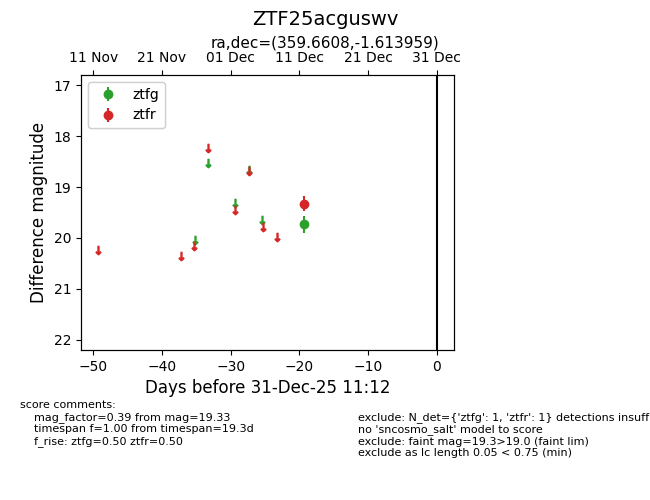
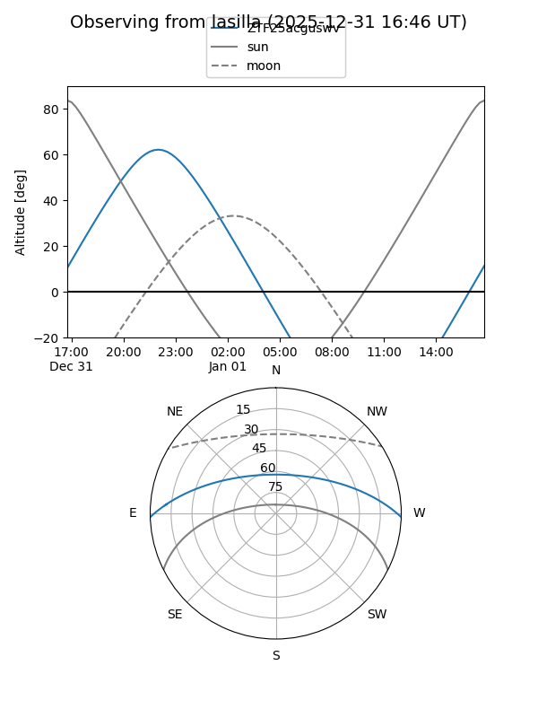
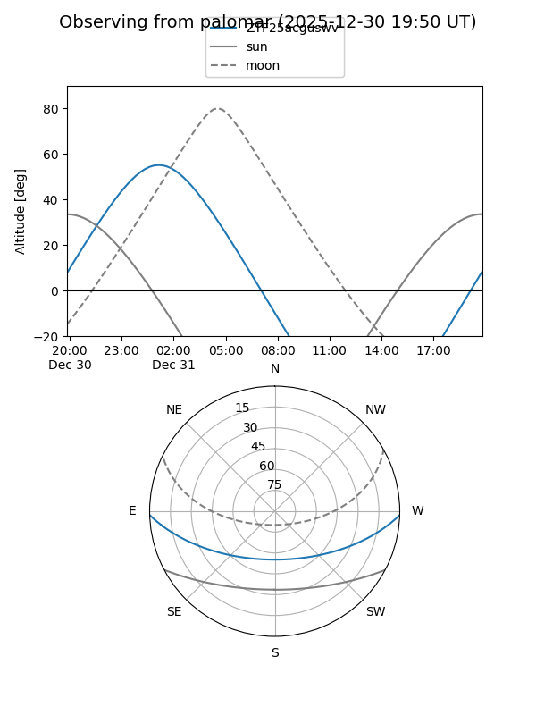

ZTF25acguswv
Target ZTF25acguswv at 2026-01-09 12:49
Aliases and brokers:
FINK: link
Lasair: link
ALeRCE: link
alt names
ZTF25acguswv (ztf,fink_ztf)
Coordinates:
equatorial (ra, dec) = 359.6608,-1.61396
equatorial (HMS+DMS) = 23:58:38.60,-01:36:50.25
galactic (l, b) = (94.3365,-61.51926)
Flags:
Photometry:
last ztfg=19.73, ztfr=19.33
1 ztfg, 1 ztfr detections
Lightcurve

Visibility


Additional plots